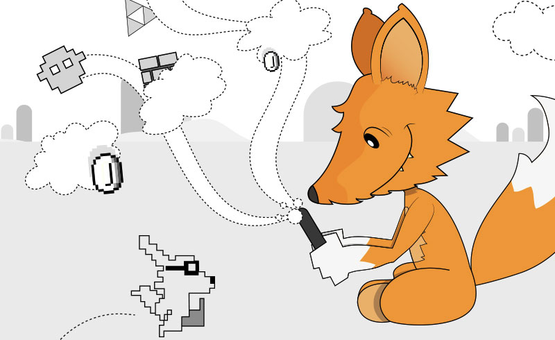

Создание игр для Firefox OS

Эта книга является родственной книге Разработка для Firefox OS, которая сосредоточена на создании приложений для Firefox OS. После выпуска книги я поговорил со многими людьми и решил что нужен похожий ресурс, направленный на разработку игр, так как это часто является одним из недооцененных аспектов документации разработчика. Книга содержит некоторые тексты из предыдущего руководства.
Я отложил эту идею в долгий ящик, но когда у меня появилось время для осуществления задумки, подошёл GSoC 2014 и я решил представить свою идею как проект. Быть студентом GSoC прекрасно и это позволило мне посвятить время книге, не обращая внимания на оплату ежемесячных счетов. Это фантастическая программа, она даёт возможность студентам создавать качественный открытый материал, который, в противном случае, занял бы слишком много времени.
Для кого эта книга
Эта книга написана для читателей со средними знаниями HTML, CSS и JavaScript, которые хотят начать свой путь в удивительный мир разработки игр. Обучение HTML, CSS и JavaScript выходит за рамки этой книги, но я дам вам ссылки на хорошие справочники.
Хотите узнать больше о разработке под Firefox OS?
Эта книга ориентирована на разработку игр, но есть другие книги и ресурсы для тех, кто желает узнать больше о разработке под Firefox OS.
Разработка для Firefox OS. Близкая по теме свободная и открытая книга, но ориентированная на разработку приложений. Если вы читаете данную эту книгу, то, вероятно, та понравится тоже.
Firefox OS Developer Hub. Центр разработчика на Firefox Marketplace содержит много информации и ресурсов о создании приложений для Firefox OS.
The Firefox OS Zone on Mozilla Developers Network. MDN, вероятно, один из самых важных онлайновых ресурсов для разработчиков, сфокусированный на веб-технологиях. Это свободная и открытая сокровищница документации, примеров и статей. Ссылка ведёт в раздел Firefox OS, посвящённый этой новой платформе.
Beginning Firefox OS HTML5 Game Programming. Боб Талфрэм выпустил эту удивительную книгу на Amazon. Если вы хотите узнать больше информации о разработке игр под Firefox OS, прочтите её.
Firefox OS Gaming Blog. Блог Боба Талфрэма об играх на Firefox OS. После того, как вы начнёте создавать игры, вы, вероятно, увидите ваши творения здесь.
Также все известные книги связанные с Firefox OS перечислены на сайте http://firefoxosbooks.org.
Исходный код
Исходный код игры Foxnoid доступен в хранилище Github. Вы должны взять его.
Будьте в курсе
Эта книга распространяется бесплатно с помощью Leanpub.
Об авторе
Андре Алвес Гарсия — разработчик мобильных приложений и веб-разработчик. Он выступал докладчиком на многих конференциях и семинарах, таких как MobileConf, RioJS, Campus Party Recife и FISL, рассказывая о Firefox OS.
В этой книге вы найдёте множество моментов, где я выражаю свое личное мнение и принимаю решения, которые могут отличаться от того, что делают другие программисты — особенно, если это помогает проще объяснить идею. Я попытаюсь сделать это понятно и объяснить мои доводы, когда выражаю своё мнение. В любом случае, если возникла ошибка в моих словах, то я пересмотрю и обновлю текст книги.
Как связаться с автором
Для отправки комментариев и обратной связи, пожалуйста, напишите письмо на fxosgamedevguide@andregarzia.com. Мой сайт http://andregarzia.com. Мой аккаунт в Twitter @soapdog.
Обратная связь
Это бесплатная и открытая книга и я напряжённо жду от вас любых комментариев. Всё содержание книги лежит в хранилище GitHub и построено с использованием Markdown (с некоторыми расширениями от Leanpub). Чтобы высказать своё мнение, исправить баги и добавить улучшения просто обратитесь ко мне.
Хранилище Git для этой книги — https://github.com/firefoxos-gamedev/book.
Иллюстрация обложки
Обложку создал Рафаэль Экхардт, дизайнер и иллюстратор из Бразилии. Вы можете связаться с ним (он фрилансер) и посмотреть его работы на http://raphaeleckhardt.com.